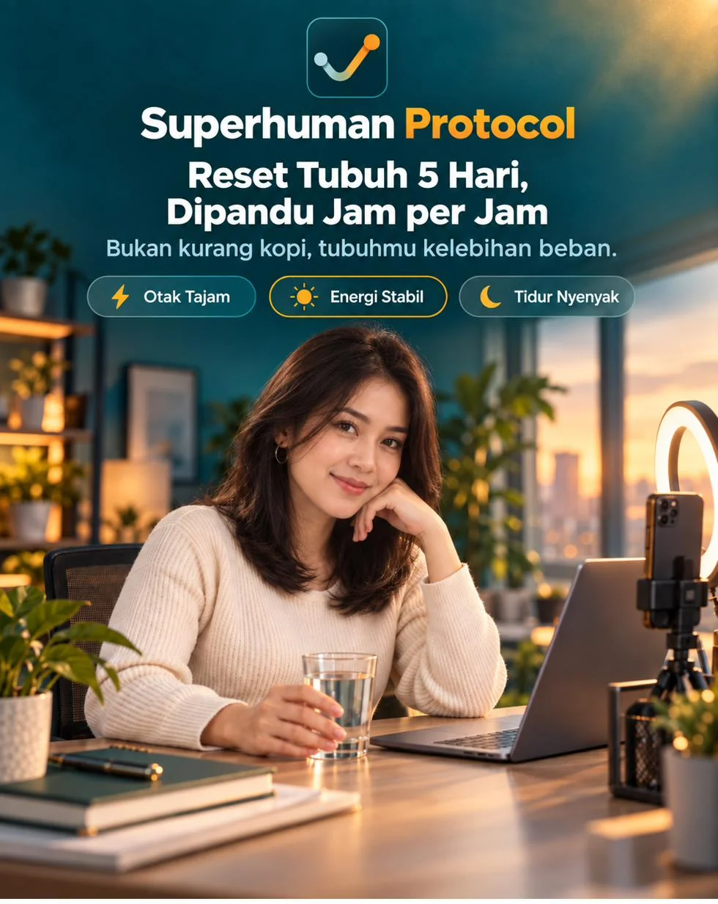
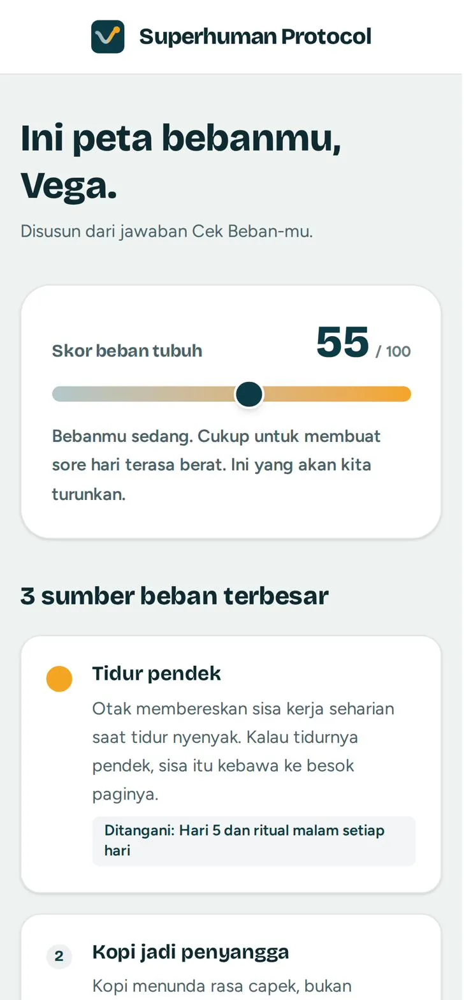
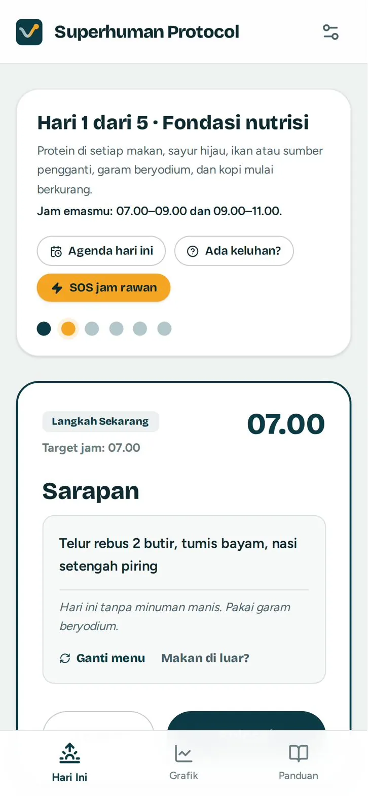
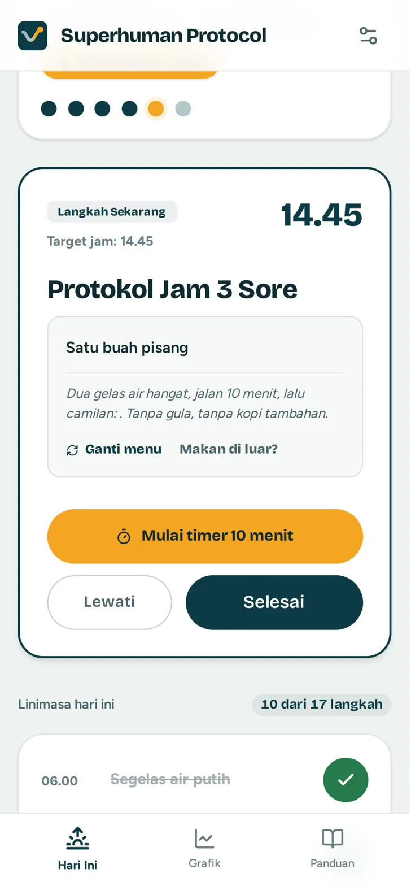
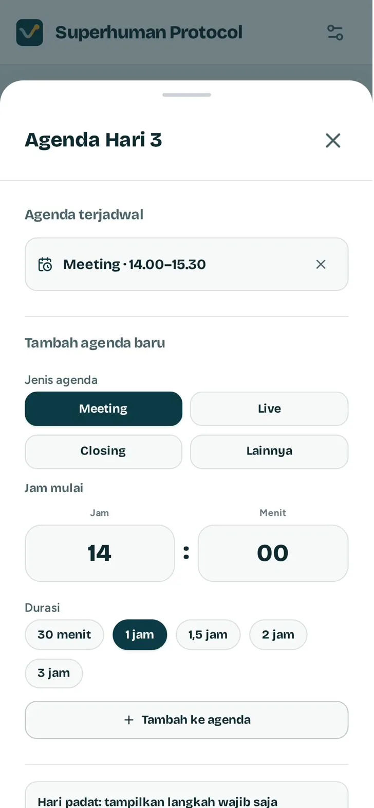
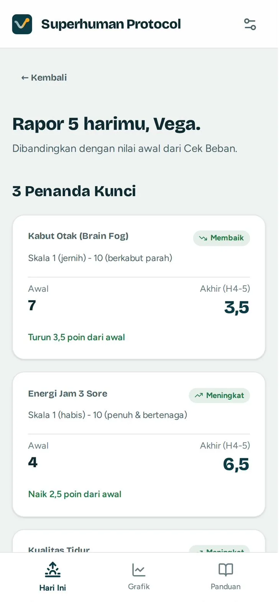
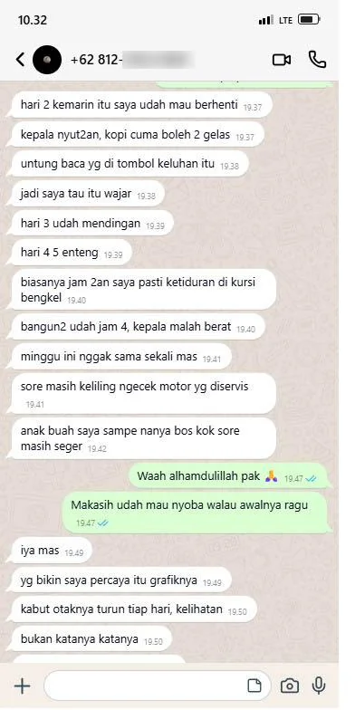
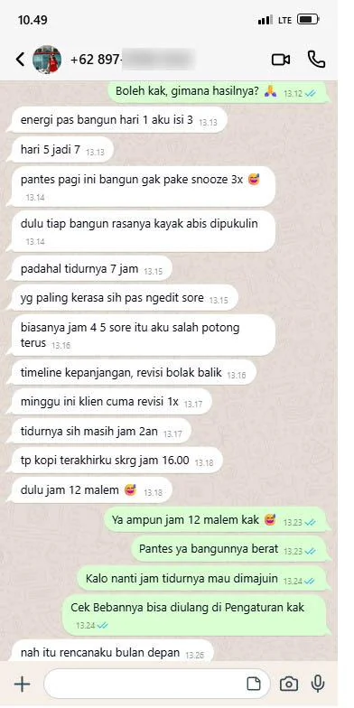
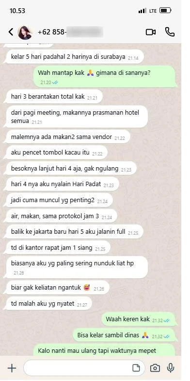
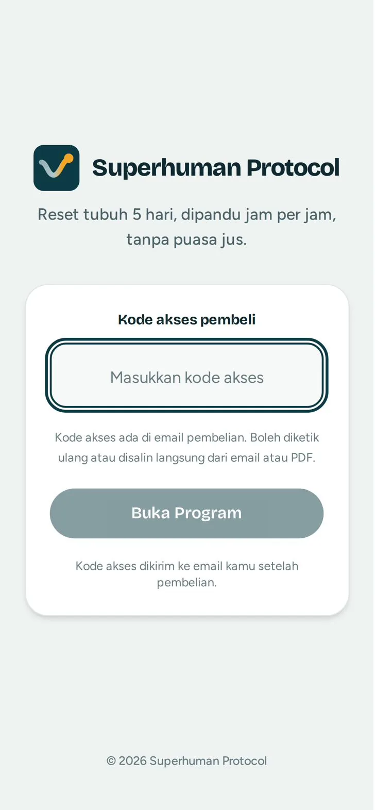

Untuk pengusaha, kreator, dan siapa pun yang penghasilannya bergantung pada otaknya sendiri

Superhuman Protocol memandu reset tubuh berurutan 5 hari, jam per jam dari bangun sampai tidur, sambil kamu tetap meeting, live, dan closing. Tanpa puasa jus, tanpa menambah kopi, tanpa beli suplemen. Di Hari 5, kamu lihat sendiri di grafik apakah kabut otak sore, energi, dan tidurmu bergerak.
Sekali bayar. Akses selamanya. Buka dari browser HP atau laptop, gak perlu download dari Play Store.
“Bentar ya, aku cek dulu angkanya.”
Jam 3 sore, closing lewat Zoom dengan calon klien terbesar bulan ini. Dia nanya satu angka yang biasanya kamu hafal di luar kepala. Kepalamu kosong. Padahal kopi kedua baru habis setengah jam yang lalu.
“Padahal tidurnya 7 jam.”
Alarm bunyi, kamu snooze tiga kali. Bangun rasanya kayak abis dipukulin. Kamu buka HP, lihat 40 chat customer yang belum dibalas, dan diam-diam mulai mikir, jangan-jangan ada apa-apa sama badanku.
“Oke, besok mulai jus detoks.”
Botol pertama dan kedua lancar. Jam 2 siang kepala nyut-nyutan, badan lemes, dan kamu ada jadwal live jam 7 malam. Jam 4 kamu sudah pesan kopi susu gula aren. Hari pertama, selesai.
Tiga adegan ini kelihatan beda. Akarnya satu. Dan bukan karena kamu kurang disiplin, kurang tidur, atau kurang kopi.
Coba hitung bebanmu seminggu ini. Makan di luar hampir tiap hari. Tidur 5 sampai 6 jam karena balas chat sampai lewat tengah malam. Kopi jadi penyangga dari pagi sampai sore. Air galon yang entah sudah berapa tahun dipakai ulang. Gak pernah ada satu hari pun jeda untuk bersih-bersih.
Tubuhmu sebenarnya sudah punya sistem bersih-bersih sendiri: usus, hati, dan tidur. Masalahnya, sistem itu kerja lembur tanpa bahan dan tanpa urutan. Kopi cuma menunda rasa capeknya, bukan membereskannya.
Itu juga kenapa jus detoks bikin lemas. Dia lompat langsung ke tahap bersih-bersih tanpa fondasi, sambil memotong makanan yang justru dibutuhkan otak untuk tetap kerja. Wajar kalau banyak yang menyerah sebelum sore di hari pertama.
Superhuman Protocol membalik urutannya. Isi dulu bahannya, baru bersih-bersih, satu bagian per hari.
Protein di setiap makan, sayur hijau, ikan atau sumber pengganti, garam beryodium. Kopi mulai dikurangi bertahap, bukan distop mendadak.
Serat dan air yang cukup, jeda makan yang dijaga, tanpa puasa, tanpa pencahar.
Obat cacing bebas sesuai label kemasan, makanan matang, ganti sprei dan handuk. Kalau kamu di Jalur Aman, langkahnya diganti versi ringan tanpa obat.
Hari tanpa gorengan dan gula tambahan, menu dari bahan dapur biasa, jam kopi terakhir yang dimajukan, lalu ritual tutup hari.
Fondasi dulu, baru bersih-bersih.
Urutan yang dijaga programnya setiap hari, supaya kamu tetap bisa kerja selama 5 hari itu, bukan tumbang di tengah jalan.
19 pertanyaan singkat: jam tidur dan bangun, berapa gelas kopi, jam berapa biasanya ngeblank, seberapa sering makan di luar, sampai kebiasaan di rumah.
Keluar Peta Beban: skor beban tubuhmu, 3 sumber beban terbesar, kurva energi per jam, dan jalur yang aman untukmu.

Rencana turun kopi bertahap supaya gak sakit kepala, dan daftar belanja dari pasar atau minimarket yang bisa langsung kamu kirim ke WhatsApp pasangan atau asisten.
Langkah yang harus kamu kerjakan sekarang sudah ada di layar pertama, lengkap dengan jamnya. Kerjakan, tekan Selesai, lanjut kerja.

Hari Ini
Seluruh hari disusun dari jam bangunmu sendiri: kapan minum, kapan makan, kapan gerak, kapan jeda layar, sampai jam kopi terakhir. Di atasnya selalu ada satu kartu Langkah Sekarang. Isinya jelas, misalnya “Telur rebus 2 butir, tumis bayam, nasi setengah piring.” Kerjakan, tekan Selesai, kartu berikutnya muncul di jamnya.
Gak suka menunya? Tekan Ganti Menu. Bangun lebih siang dari biasanya? Linimasanya ikut bergeser.
Protokol Jam 3 Sore
Hari ini yang muncul kartu Protokol Jam 3 Sore: dua gelas air hangat, jalan 10 menit, lalu camilan tanpa gula. Tekan Mulai Timer, timernya jalan sendiri.
Sebelum mulai, kamu menilai energimu. Setelah selesai, kamu menilai lagi. Dua angka itu tersimpan, dan di Hari 5 kamu lihat sendiri polanya. Protokol ini bisa dipakai mulai hari pertama, bahkan sebelum reset-nya jalan jauh.

Hari yang gak ideal

Grafik dan Rapor
Tiap check-in singkat masuk ke grafik: kabut otak, energi jam 3 sore, dan kualitas tidur. Di Hari 5, Rapor-mu keluar, membandingkan angka awal dari Cek Beban dengan angka di hari-hari terakhir.
Kamu juga dapat Peta Jam Emas: jam otakmu paling tajam untuk keputusan besar dan pekerjaan paling sulit, gelombang kedua untuk meeting atau live, dan jam rawan untuk tugas yang gak butuh mikir berat.

Setelah Hari 5
Lanjutkan dengan Pemeliharaan 30 Hari supaya hasilnya gak balik lagi. Lalu setelah periode gila-gilaan, launching, lebaran, perjalanan dinas, begadang seminggu, tekan Reset Ulang: penuh 5 hari, atau Reset Kilat 3 hari kalau waktunya mepet.
Riwayat tiap reset tersimpan, jadi kamu bisa bandingkan dari bulan ke bulan.
menyusun reset tubuh 5 hari jam per jam dari jam bangunmu, menggeser jadwal saat harimu padat, memberi tahu mana keluhan yang wajar, dan menunjukkan di grafik apakah kabut otak, energi, dan tidurmu bergerak.
dokter, dan bukan pengganti pemeriksaan. Program ini tidak mendiagnosis, tidak menjual suplemen atau ramuan, tidak memakai enema atau pencahar, dan tidak menjanjikan berat badan turun. Kalau ada keluhan yang perlu diperiksa, program menyuruhmu berhenti dan ke dokter, bukan memaksa lanjut.
Saat Cek Beban, kamu ditanya beberapa hal: sedang hamil atau menyusui, punya penyakit yang sedang ditangani dokter, atau minum obat resep setiap hari. Kalau ada yang kamu tandai, program otomatis memakai Jalur Aman: perubahan makan dibuat bertahap, dan langkah obat cacing di Hari 4 diganti versi ringan tanpa obat. Sebelum mengubah pola makan, tetap bicarakan dulu dengan dokter yang biasa menanganimu.
Data kesehatanmu tersimpan di HP-mu sendiri. Tanpa akun, tanpa dikirim ke mana-mana.
| Jus detoks 1 sampai 3 hari | Suplemen atau kopi fokus | Superhuman Protocol | |
|---|---|---|---|
| Tetap makan dan kerja | Makan diganti botol, sering lemas | Bisa | Makan tiga kali, dijadwal sesuai jam kerjamu |
| Yang dibenahi | Langsung bersih-bersih, tanpa fondasi | Rasa capeknya ditambal | Urutannya: fondasi dulu, baru bersih-bersih |
| Jadwal harian | Ikut jadwal kirim botol | Tidak ada | Jam per jam, ikut jam bangunmu |
| Saat hari padat atau berantakan | Gagal, mulai dari nol | Tidak berpengaruh | Hari Padat, Agenda, atau diulang besok |
| Tahu ada yang berubah | Pakai perasaan | Pakai perasaan | Grafik dan Rapor 5 Hari |
| Biaya tiap dipakai | Beli lagi tiap paket | Beli lagi tiap botol habis | Sekali bayar, bisa diulang tiap bulan |
| Rambu keamanan | Jarang ada | Tergantung label | Cek Beban, Jalur Aman, dan tanda kapan berhenti |
Geser untuk melihat cerita lainnya. Nomor disensor untuk menjaga privasi.



Satu paket jus detoks untuk sehari harganya Rp300 ribuan. Sebotol suplemen fokus Rp400 ribuan, dan habis dalam sebulan. Superhuman Protocol sekali bayar, lalu bisa kamu ulang setiap kali badanmu mulai drop lagi.
Rp127.000 untuk 12 kali reset.Kalau kamu ulang sebulan sekali, sekitar Rp10.600 per reset di tahun pertama. Lebih murah dari segelas kopi susu yang biasanya kamu beli jam 3 sore. Setelah itu gak ada tagihan apa-apa lagi.
Panduan Akses berisi kode masuk dikirim ke email yang kamu pakai saat order.
Bisa pakai QRIS, transfer bank, atau e-wallet.
Begitu pembayaran terkonfirmasi, kamu diarahkan ke halaman Pembayaran Berhasil, dan Panduan Akses berisi kode masuk dikirim ke email kamu. Kalau belum ada di kotak masuk, cek folder Spam atau Promosi.
Buka shp-kit.netlify.app, masukkan kode dari email, lalu isi Cek Beban Tubuh sekitar 3 menit. Hari 0 bisa kamu siapkan malam ini, Hari 1 mulai besok pagi.

Kamu sudah coba tidur lebih awal. Sudah coba kopi yang lebih mahal. Sudah coba jus detoks, dan menyerah sebelum sore.
Bukan karena kamu lemah. Karena selama ini tubuhmu gak pernah dikasih urutan yang benar untuk membereskan bebannya.
Hari pertamamu cuma sarapan telur, dua gelas air, dan jalan 10 menit jam 3 sore.
Sekali bayar. Akses selamanya. Buka dari browser HP atau laptop, gak perlu download dari Play Store.